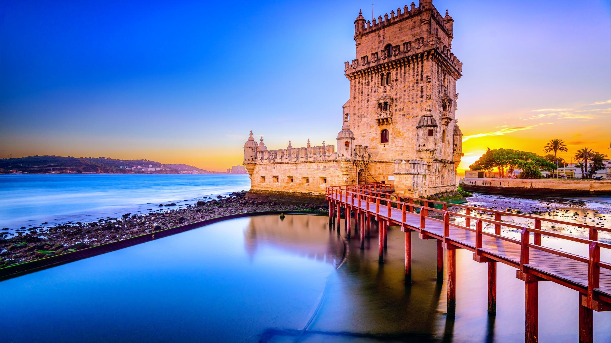
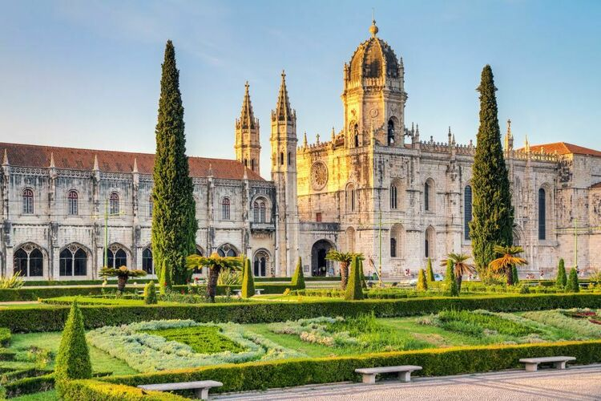
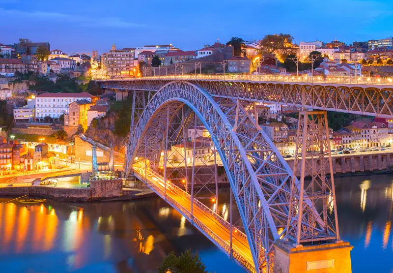
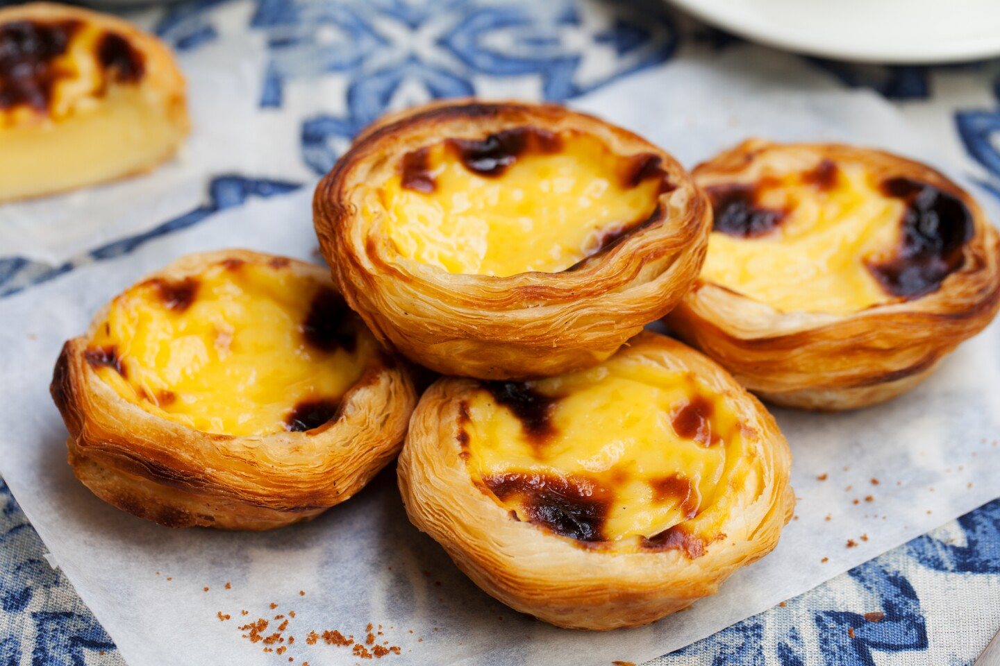
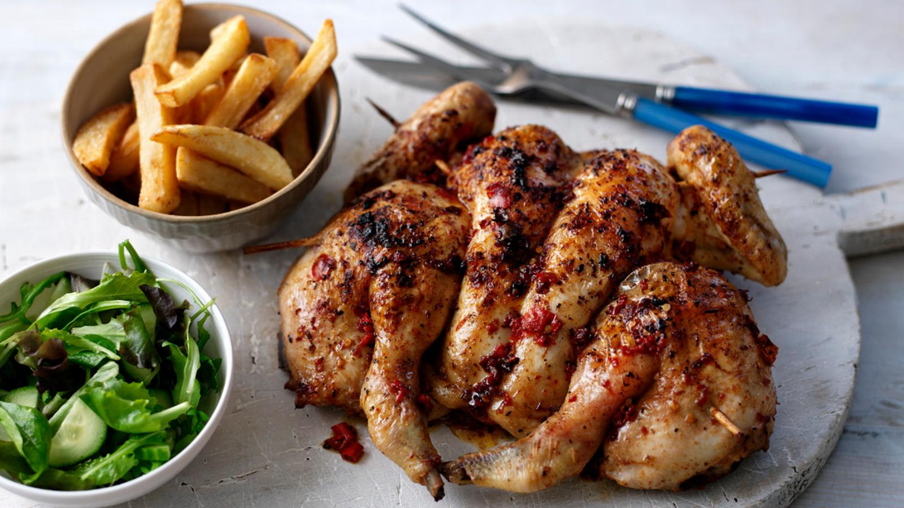
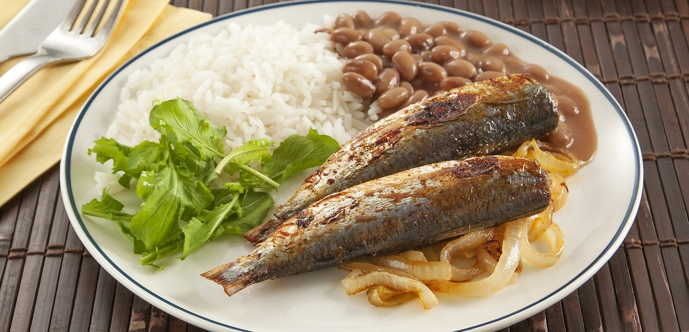

PORTUGAL
Tourist Spot

Torre de Belém
Belém Tower, officially the Tower of Saint Vincent is a 16th-century fortification located in Lisbon that served as a point of embarkation and disembarkation for Portuguese explorers and as a ceremonial gateway to Lisbon. This tower symbolizes Portugal's maritime and colonial power in early modern Europe.

Jerónimos Monastery
The Jerónimos Monastery or Hieronymites Monastery is a former monastery of the Order of Saint Jerome near the Tagus river in the parish of Belém, in the Lisbon Municipality, Portugal.

Luís I Bridge
The Dom Luís I Bridge, or Luís I Bridge, is a double-deck metal arch bridge that spans the river Douro between the cities of Porto and Vila Nova de Gaia in Portugal. At its construction, its 172 metres span was the longest of its type in the world.
Famous Food

Pastel De Nata
Portuguese custard tarts (or pasteis de nata) are crisp, creamy, and decadently sweet. This Portuguese dessert recipe features a delicately spiced flavor and uses pantry ingredients like egg yolks, flour, and cinnamon to create a one-of-a-kind pastry.

Piri-piri chicken
Piri-piri chicken is a spicy dish with roots in both Africa and Portugal. The dish was created in Angola and Mozambique when Portuguese settlers arrived with chile peppers (known as piri-piri in Swahili). Timing note: The chicken needs to marinate for at least four hours before being grilled.
